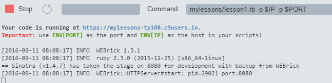

Cloud9を使ってみた！(2)
クラウドで使ってみた
本来のCloud9の使い方であるクラウド上でのIDEとして使ってみました。驚くべきことに（って、冷静に考えれば当たり前なのですが）、ここで作成したWebアプリやHTMLを実行すると、いきなりPCやスマホ、タブレットから外部アクセスできるWebアプリ、ホームページが出来てしまいます。
登録・設定は後で説明しますが、まずは使い勝手から。Cloud9が運営するクラウド上で動いているので、Virtual BoxもVagrantも使いません。登録が完了してWorkspaceと呼ばれる作業領域を作ってOpenすると、いきなり自分のubuntuの環境が出来あがっています。そこでまずやることは、トップメニューの[Window]から[New Terminal] を選んでターミナル(bash)を立ち上げ、すでにおなじみの、
gem install sinatra
gem install sinatra-contrib
これで、これまでと同じ環境がクラウド上に出来上がります。ただローカルと違ってubuntuとPCの共有フォルダーは無いので、必要なファイルをアップロードしなければなりません。これがまた簡単で、トップメニューの[File]/[Upload Local Files ..]からでも良いのですが、左のWorkspaceのディレクトリーに直接、PC上の必要なファイルをまとめてドラッグ・アンド・ドロップすればおしまい。これでどのPCからでも全く同じ環境でプログラム作成ができるようになります。
MacでもPCでも機種依存性やVAIOのBIOS設定などもなしで使えるし、何よりも自分のマシンを一切汚さずに環境ができるのがメリットです。
またネットワークなので人の作ったワークスペースや環境設定をそのままもらって来たり、出来あがったものをお互いに見えるようにすることもできます。私たちにはまだまだ宝の持ち腐れですが、共同作業や一つのファイルを同時に複数の人が編集することもできるようです。
rubyのプログラムの実行はローカル編とほぼ同じなのですが、一点だけ注意が必要なのが、実行させるときにConsole画面のCommandでIPとPORTの指定を下記のように指定しないといけないこと。
パス名/アプリ名.rb –o $IP –p $PORT
＊IP,
PORTは192.168.x.x, 8080とかじゃなくて、上の通り”$IP” “$PORT”と入力。それぞれCloud9があらかじめ設定したIP、PORT値が入力されます。
これが面倒くさいところで、sinatraじゃなくてruby
on railsやCloud9がテンプレートを用意している環境であればIPやPORTの設定は不要か、上のメニューのENVのところに書いてセーブしておけば良いようです。今のところsinatraでもこのオプションさえつければ問題なく動いています。いよいよRunさせると、Consoleにメッセージが現れます。

“Your code is running at https://xxxxxx”
をクリックして、“Open”すれば、ブラウザーの別タグに走っているアプリが表示されます。このURLをスマホでも別のマシンでもブラウザーに入力すればどこからでもアプリにアクセスでき、ちょっと感動します。ちなみにCloud9はあくまでも開発用なので、開発しているマシンからCloud9への接続が無くなると（つまりCloud9を閉じたりPCをスリープさせたりすると）サーバーもしばらくして落とされるようです。
ローカルで動かすのに比べてデメリットは、カード情報を入れなければいけないくらいでしょうか。あとWorkspaceのオープンに少し時間がかかるのとくらい。ネットならではのメリットで人様の環境や成果物をもらって来たり、コミュニティのQ&Aが充実していたりするのですが、全部英語ベースなのもともかくとして、みんな難しそうなことを言っているので、初心者としてはなかまどうしでお遊び程度にやって見るのが良いですね。